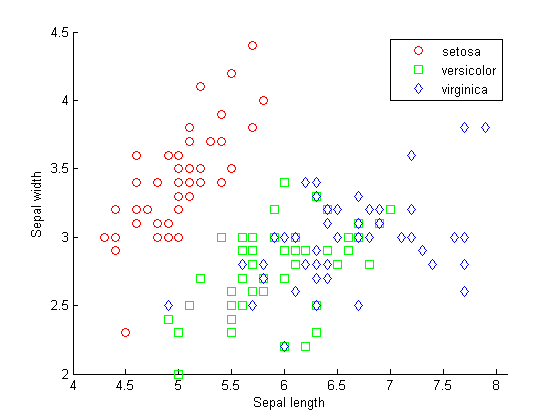
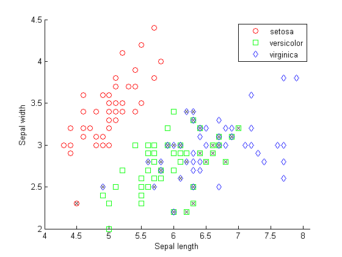
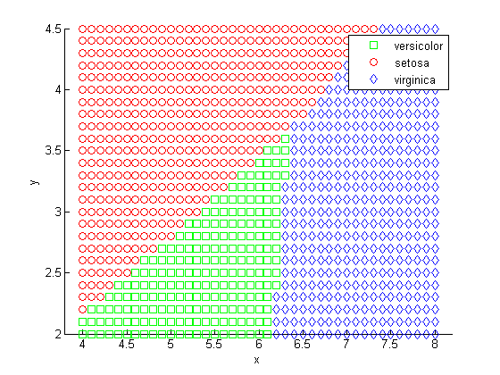
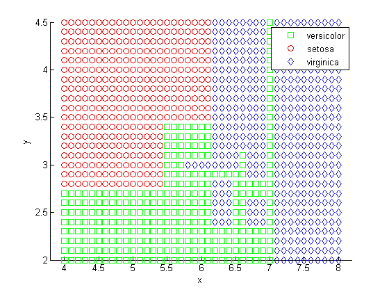
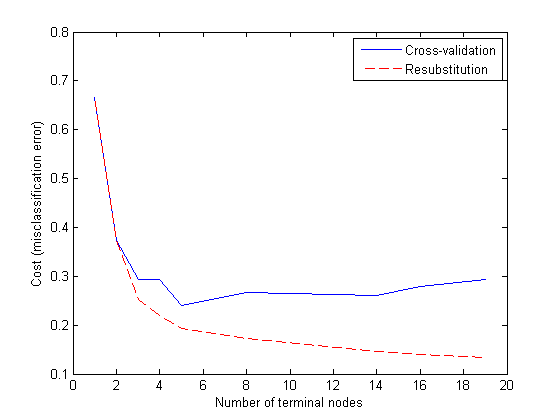
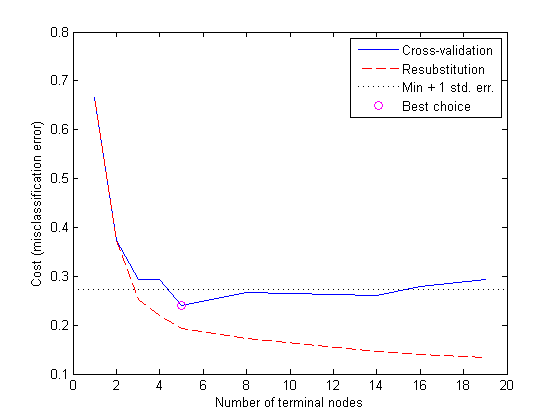

分類
さまざまな変数 (「予測変数」と呼びます) に関する測定値と既知のクラス ラベルがある観測で構成されるデータ セットがあるとします。新しい観測の予測値を入手した場合、その観測がおそらくどのクラスに属するのかを判定できるでしょうか。これは分類の問題です。このデモでは、Statistics Toolbox™ を使用して MATLAB® で分類アルゴリズムをフィッシャーのアヤメのデータに適用して、分類アルゴリズムを実行する方法について説明します。
目次
フィッシャーのアヤメのデータ
フィッシャーのアヤメのデータは、アヤメの標本 150 個のがく片の長さと幅、花弁の長さと幅に関する測定値で構成されます。3 種それぞれについて 50 個の標本があります。データを読み込んで、がく片の測定値が種間でどのように異なるのかを調べてみましょう。がく片の測定値を格納した 2 つの列を使用することができます。
load fisheriris gscatter(meas(:,1), meas(:,2), species,'rgb','osd'); xlabel('Sepal length'); ylabel('Sepal width'); N = size(meas,1);
1 本のアヤメのがく片と花弁を測定し、その測定値に基づいて種を判定する必要があるとします。この問題を解く 1 つのアプローチは、「判別分析」と呼ばれます。
線形判別分析と二次判別分析
関数 classify は、さまざまな判別分析を使用して分類を行うことができます。最初に、既定の線形判別分析 (LDA) を使用してデータを分類します。
ldaClass = classify(meas(:,1:2),meas(:,1:2),species);
既知のクラス ラベルがある観測は通常、「トレーニング データ」と呼ばれます。ここで、誤判別率を計算します。これは、トレーニング セットに関する誤判別の誤差 (誤判別された観測の割合) です。
bad = ~strcmp(ldaClass,species); ldaResubErr = sum(bad) / N
ldaResubErr =
0.2000
トレーニング セットに関する混合行列を計算することもできます。混合行列には、既知のクラス ラベルと予測されたクラス ラベルについての情報が格納されます。一般的に言って、混合行列の (i,j) 要素は、既知のクラス ラベルがクラス i であり、予測されたクラス ラベルがクラス j である標本の数を表します。対角要素は、正しく分類された観測を表します。
[ldaResubCM,grpOrder] = confusionmat(species,ldaClass)
ldaResubCM =
49 1 0
0 36 14
0 15 35
grpOrder =
'setosa'
'versicolor'
'virginica'
150 個のトレーニング用観測のうち、20% つまり 30 個の観測が線形判別関数によって誤判別されています。どの観測が誤判別されたのかを具体的に確認するには、誤判別された点を通る X を描きます。
hold on; plot(meas(bad,1), meas(bad,2), 'kx'); hold off;
この関数により、平面が直線で複数の領域に分割され、種ごとに別の領域に割り当てられました。この領域を可視化する 1 つの方法は、(x,y) 値のグリッドを作成し、そのグリッドに分類関数を適用することです。
[x,y] = meshgrid(4:.1:8,2:.1:4.5); x = x(:); y = y(:); j = classify([x y],meas(:,1:2),species); gscatter(x,y,j,'grb','sod')
データ セットのなかには、さまざまなクラスの領域が直線ではっきりと分割されないものもあります。その場合には、線形判別分析は適切ではありません。むしろ、ここで紹介するデータには二次判別分析 (QDA) を試すことができます。
二次判別分析の誤判別率を計算します。
qdaClass = classify(meas(:,1:2),meas(:,1:2),species,'quadratic');
bad = ~strcmp(qdaClass,species);
qdaResubErr = sum(bad) / N
qdaResubErr =
0.2000
誤判別率を計算できました。人は一般に、検定誤差 (「汎化誤差」とも呼ばれます) の方に関心を持つものです。この誤差は、独立したセットに関して見込まれる予測誤差です。実際、判別誤差では検定誤差が過小評価されがちです。
この場合、ラベル付けされた別のデータ セットはありませんが、交差検定を行うことによりシミュレートすることができます。分類アルゴリズムでの検定誤差を推定するには、階層化された 10 分割交差検定がよく使用されます。この検定では、トレーニング セットが 10 個の互いに素のサブセットに無作為に分割されます。各サブセットは、サイズがほぼ等しく、トレーニング セット内でのクラスの割合とほぼ同じクラスの割合を持っています。1 つのサブセットを削除し、他の 9 個のサブセットで分類モデルをトレーニングし、削除されたサブセットをトレーニング済みモデルを使用して分類します。これを一度に 1 つのサブセットを 10 個のサブセットから削除して繰り返します。
交差検定によってデータが無作為に分割されるので、結果は初期無作為シードで決まります。このデモでまったく同じ結果を再現するには、次のコマンドを実行します。
s = RandStream('mt19937ar','seed',0); RandStream.setDefaultStream(s);
最初に、関数 cvpartition を使用して 10 個の互いに素の階層化されたサブセットを生成します。
cp = cvpartition(species,'k',10)
cp =
K-fold cross validation partition
N: 150
NumTestSets: 10
TrainSize: 135 135 135 135 135 135 135 135 135 135
TestSize: 15 15 15 15 15 15 15 15 15 15
関数 crossval は、所定のデータ区分 cp を使用して、LDA と QDA 両方の誤判別の誤差を推定することができます。
階層化された 10 分割交差検定を使用して、LDA の真の検定誤差を推定します。
ldaClassFun= @(xtrain,ytrain,xtest)(classify(xtest,xtrain,ytrain)); ldaCVErr = crossval('mcr',meas(:,1:2),species,'predfun', ... ldaClassFun,'partition',cp)
ldaCVErr =
0.2000
このデータに関する LDA の交差検定誤差は、LDA の誤判別率と同じ値です。
階層化された 10 分割交差検定を使用して、QDA の真の検定誤差を推定します。
qdaClassFun = @(xtrain,ytrain,xtest)(classify(xtest,xtrain,ytrain,... 'quadratic')); qdaCVErr = crossval('mcr',meas(:,1:2),species,'predfun',... qdaClassFun,'partition',cp)
qdaCVErr =
0.2267
QDA の交差検定誤差の値は、LDA の場合より少し大きいです。これは、モデルが簡単であればあるほど類似度が高くなるか、または複雑なモデルより成績が良くなることを示しています。
単純ベイズ分類器
関数 classify には他にも diagLinear と diagQuadratic という 2 種類があります。これらは linear および quadratic と似ていますが、対角の共分散行列の推定値がある点が異なります。これらの対角性の選択肢は、単純ベイズ分類器の具体例です。クラス ラベルが与えられた場合、変数が条件的に独立しているものと仮定されるからです。単純ベイズ分類器は、最も一般的な分類器の一種です。クラスの条件付きの下で変数が互いに独立であるという仮定は、一般には成り立ちませんが、多くのデータ セットで単純ベイズ分類器が実際のところうまくいくことが確認されています。
NaiveBayes クラスを使用して、より一般的な種類の単純ベイズ分類器を作成します。
最初に、ガウス分布を使用して各クラスの各変数をモデル化します。誤判別率と交差検定誤差を計算することができます。
nbGau= NaiveBayes.fit(meas(:,1:2), species); nbGauClass= nbGau.predict(meas(:,1:2)); bad = ~strcmp(nbGauClass,species); nbGauResubErr = sum(bad) / N nbGauClassFun = @(xtrain,ytrain,xtest)... (predict(NaiveBayes.fit(xtrain,ytrain), xtest)); nbGauCVErr = crossval('mcr',meas(:,1:2),species,... 'predfun', nbGauClassFun,'partition',cp)
nbGauResubErr =
0.2200
nbGauCVErr =
0.2200
これまでは、各クラスの変数に多変量正規分布があると仮定してきました。たいていの場合、これは理にかなった仮定です。しかし、このように仮定したくないかまたはこの仮定が明らかに無効であるとわかる場合もあります。そこで、各クラスの変数をカーネル密度推定を使用してモデル化してみましょう。これは、より柔軟性に富むノンパラメトリックな手法です。
nbKD= NaiveBayes.fit(meas(:,1:2), species,'dist','kernel'); nbKDClass= nbKD.predict(meas(:,1:2)); bad = ~strcmp(nbKDClass,species); nbKDResubErr = sum(bad) / N nbKDClassFun = @(xtrain,ytrain,xtest)... (predict(NaiveBayes.fit(xtrain,ytrain,'dist','kernel'),xtest)); nbKDCVErr = crossval('mcr',meas(:,1:2),species,... 'predfun', nbKDClassFun,'partition',cp)
nbKDResubErr =
0.1800
nbKDCVErr =
0.1933
このデータ セットの場合、単純ベイズ分類器にカーネル密度推定を適用すると、ガウス分布を適用した場合より誤判別率と交差検定誤差が小さくなります。
決定木
別の分類アルゴリズムは、決定木に基づきます。決定木は、単純な規則のセットです。たとえば、"がく片の長さが 5.45 未満なら、その標本を setosa (セトサ) に分類する。" です。決定木もノンパラメトリックです。各クラスの変数の分布について仮定がまったく不要だからです。
classregtree クラスは決定木を作成します。アヤメのデータの決定木を作成して、アヤメが種にどのように分類されるのかを調べます。
t = classregtree(meas(:,1:2), species,'names',{'SL' 'SW' });
決定木法で平面が分割される様子を見るのは興味深いものです。上と同じ手法で、各種に割り当てられた領域を可視化します。
[grpname,node] = t.eval([x y]); gscatter(x,y,grpname,'grb','sod')
決定木を可視化する別の方法は、決定規則とクラス割り当ての図を描くことです。
view(t);

この乱れたように見える木では、"SL < 5.45" という形式の一連の規則を使用して、各標本を 19 個の終端ノードのいずれかに分類します。ある観測の種割り当てを判定するため、最上位ノードから開始して規則を適用していきます。点が規則を満たすなら左に進み、そうでないなら右に進みます。最終的には、観測を 3 つの種のいずれかに割り当てる終端ノードに到達します。
決定木の誤判別率と交差検定誤差を計算します。
dtclass = t.eval(meas(:,1:2)); bad = ~strcmp(dtclass,species); dtResubErr = sum(bad) / N dtClassFun = @(xtrain,ytrain,xtest)(eval(classregtree(xtrain,ytrain),xtest)); dtCVErr = crossval('mcr',meas(:,1:2),species, ... 'predfun', dtClassFun,'partition',cp)
dtResubErr =
0.1333
dtCVErr =
0.3200
決定木アルゴリズムの場合、交差検定誤差の推定値は判別誤差より有意に大きくなります。これは、生成された木がトレーニング セットを過剰に適合することを示しています。言い換えると、この木は元のトレーニング セットをうまく分類する木ですが、木の構造はこの特定のトレーニング セットの影響を受けやすいので、別の新しいデータでは成績が低下する可能性が高くなります。別の新しいデータでは、複雑な木より良い成績を収めるより単純な木を見つけることができることがよくあります。
枝切りを行います。最初に、元の木のさまざまなサブセットについて誤判別率を計算します。次に、これらのサブツリーについて交差検定誤差を計算します。グラフは、誤判別率が楽観的すぎることを示しています。ツリーのサイズが大きくなるにつれて誤判別率は小さくなりますが、ある点を越えると、ツリーのサイズが増えると交差検定誤差率が上昇するようになります。
resubcost = test(t,'resub'); [cost,secost,ntermnodes,bestlevel] = test(t,'cross',meas(:,1:2),species); plot(ntermnodes,cost,'b-', ntermnodes,resubcost,'r--') figure(gcf); xlabel('Number of terminal nodes'); ylabel('Cost (misclassification error)') legend('Cross-validation','Resubstitution')
どの木を選択すべきでしょうか。簡単な規則は、交差検定誤差が最小の木を選択することです。これで十分かもしれませんが、単純な木を使用しても複雑な木で得られるのとほぼ同じ結果になるのであれば、単純な木を選択することもできるでしょう。この例では、最小値の 1 標準誤差内にある最も単純な木を採用します。これは、classregtree/test 法で使用される既定の規則です。
このことは、カットオフ値を計算することによってグラフに示すことができます。このカットオフ値は、最小コストに 1 標準誤差を加えた値です。classregtree/test 法によって計算される "最高" のレベルは、このカットオフ値を下回る最小木です (bestlevel=0 が何も刈り込まれていない木であることに注意してください。したがって、classregtree/test のベクトル出力のインデックスとして使用するには、1 を加える必要があります)。
[mincost,minloc] = min(cost); cutoff = mincost + secost(minloc); hold on plot([0 20], [cutoff cutoff], 'k:') plot(ntermnodes(bestlevel+1), cost(bestlevel+1), 'mo') legend('Cross-validation','Resubstitution','Min + 1 std. err.','Best choice') hold off
最後に、刈り込まれた木を調べて、推定誤分類誤差を計算することができます。
pt = prune(t,bestlevel); view(pt)

cost(bestlevel+1)
ans =
0.2400
まとめ
このデモでは、Statistics Toolbox のさまざまな関数を使用して、MATLAB で分類を行う方法を説明しました。
このデモの目的は、フィッシャーのアヤメのデータの理想的な分析を示すことではありません。実際、がく片の測定値ではなく、またはがく片の測定値に加えて花弁の測定値を使用すると、分類の精度が向上することがあります。また、このデモの目的は、さまざまな分類アルゴリズムの強みと弱みを比較することでもありません。データ セットをさまざまに変えて分析を行い、さまざまなアルゴリズムを比較すると、得るところが大きいでしょう。他の分類アルゴリズムを実装する Statistics Toolbox の関数もあります。たとえば、関数 TreeBagger を使用して、決定木の集合についてブートストラップ集約を実行することができます。例については、Classifying Radar Returns for Ionosphere Data を参照してください。